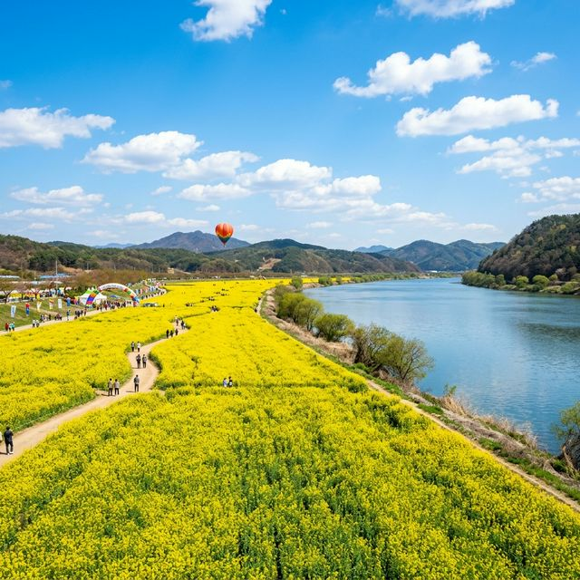
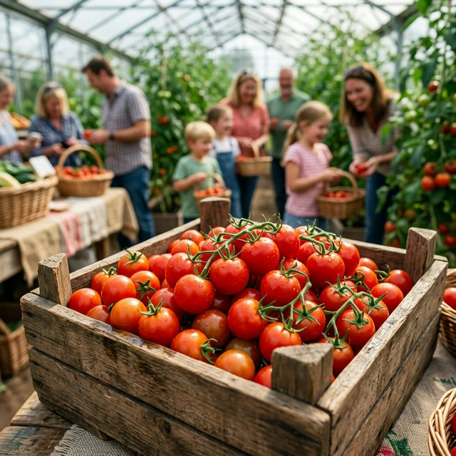
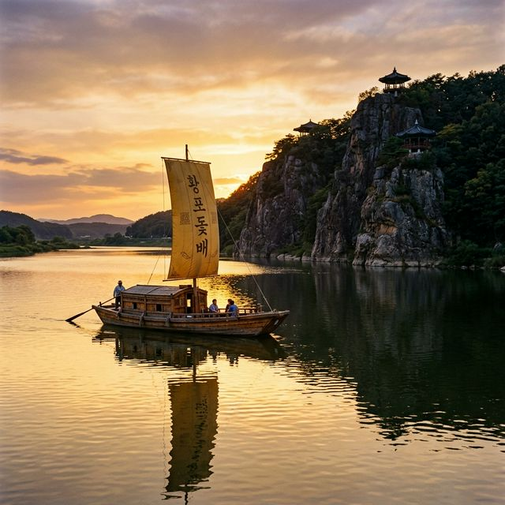

부여 세도 방울토마토 & 유채꽃 축제 2026 — 금강변 노란 유채 물결과 싱싱한 토마토 수확 체험
충청남도 부여군 세도면에서 펼쳐지는 2026 부여 세도 방울토마토 & 유채꽃 축제는 끝없이 펼쳐진 노란 유채꽃밭과 전국 최고의 당도를 자랑하는 방울토마토를 동시에 즐길 수
있는 이색적인 봄 축제입니다. 4월 17일부터 19일까지 3일간 금강변 세도 가회리 일원에서 개최되는 이번 행사는 자연이 선사하는 화려한 시각적 즐거움과 직접 수확하는 재미, 그리고 입안 가득 퍼지는
달콤한 미식의 즐거움을 선사합니다. 금강의 시원한 강바람을 맞으며 노란 유채 물결 속으로 떠나보시겠습니까?

금강을 뒤로하고 노란 카펫을 깔아놓은 듯한 세도면 유채꽃 단지의 장관 | AI 제작 이미지
1. 금강변 노란 유채 물결: 15ha 규모의 화려한 파노라마
부여 세도면 가회리 일대 금강 둔치에 조성된 유채꽃 단지는 그 규모만 해도 약 15ha(약 4만 5천 평)에 달하는 수도권 남부 최대의 유채꽃 성지입니다. 축제장에 들어서면 끝이
보이지 않을 정도로 펼쳐진 노란색 유채꽃들이 방문객을 압도합니다. 살랑이는 강바람에 일제히 몸을 흔드는 유채꽃의 모습은 마치 거대한 금빛 파도가 치는 듯한 생동감을 선사하며, 보는 이의 가슴까지 탁 트이게
만듭니다.
꽃밭 사이로 난 산책로를 걷다 보면 은은하게 퍼져오는 유채꽃 특유의 달콤한 향기가 코끝을 자극합니다. 발밑에 닿는 부드러운 흙의 감촉과 머리 위를 지나는 청명한 4월의 햇살은 일상의 피로를 잊게 해주는 최고의
보약입니다. 유채꽃은 개화 시기가 길어 축제 기간 내내 가장 아름다운 상태를 유지하는데, 특히 해 질 녘 노을이 유채꽃밭 위로 내려앉을 때의 모습은 황홀함 그 자체입니다. 사진가들 사이에서는 이미 '봄의
인생샷 명소'로 정평이 나 있습니다.
전문가들은 세도면 유채꽃 단지가 금강의 수려한 경관과 어우러져 독보적인 가치를 지닌다고 평가합니다. 2026년 축제는 유채꽃밭 내부에 다양한 포토존과 쉼터를 보강하여, 단순히 걷는 것을 넘어 꽃과 함께 충분히
머물며 힐링할 수 있는 공간으로 거듭났습니다. 통계에 따르면 지난해 방문객의 60% 이상이 가족 단위 관광객이었으며, 넓은 꽃밭이 주는 해방감과 여유로운 분위기가 높은 만족도로 이어지고 있습니다.
2. 세도 방울토마토: 전국 최고의 당도를 자랑하는 황금알
부여 세도는 일조량이 풍부하고 배수가 잘되는 사질 토양을 갖춰, 전국 방울토마토 생산량 1위를 차지하는 주산지입니다. 이곳에서 생산되는 방울토마토는 껍질이 얇고 육질이 단단하며,
무엇보다 당도가 매우 높기로 유명하여 '토마토계의 황금알'이라 불립니다. 축제장 곳곳에서는 방울토마토 시음 행사가 열리는데, 한 입 깨물면 입안 가득 터지는 달콤한 과즙과 싱그러운 향기는 기존의 토마토와는
확연히 다른 차원의 맛을 선사합니다.
세도 방울토마토의 고품질 비결은 농민들의 정성과 첨단 스마트팜 기술의 결합에 있습니다. 온도와 습도를 정밀하게 제어하는 환경 속에서 자란 토마토는 영양 성분이 풍부하고 색깔이 선명하여 시장에서도 최고 등급으로
대우받습니다. 축제장에서는 갓 수확한 싱싱한 방울토마토를 시중보다 훨씬 저렴한 가격에 박스째로 구매할 수 있는데, 이는 주변 지인들에게 줄 선물로도 최고의 선택이 됩니다. 붉은색 채소의 건강함과 달콤함이
응축된 세도의 토마토는 이번 축제의 진정한 주인공입니다.
2026년 기준, 부여군은 세도 방울토마토의 글로벌 경쟁력을 높이기 위해 '세도 메이플 토마토' 등 고당도 특화 품종을 대거 선보이고 있습니다. 실제 분석 결과 일반 토마토보다 항산화 물질인 라이코펜 함량이
약 20% 이상 높은 것으로 나타났으며, 이는 건강과 미용에 관심이 많은 젊은 층 방문객들에게 강력한 구매 동기가 되고 있습니다. 축제장 부스에서는 이러한 과학적 데이터와 함께 다양한 토마토 활용법을 공유하며
정보와 재미를 동시에 전달합니다.

싱싱한 방울토마토를 직접 수확하며 즐거운 추억을 쌓는 체험객들 | AI 제작 이미지
3. 방울토마토 수확 체험: 아이들의 오감을 깨우는 농촌 여행
축제 프로그램 중 가장 인기가 높은 것은 직접 하우스에서 토마토를 따보는 수확 체험입니다. 아이들은 어른 주먹만 한 방울토마토 넝쿨 사이를 누비며 빨갛게 익은 열매를 고르는
재미에 푹 빠집니다. 직접 손으로 열매를 비틀어 딸 때 느껴지는 톡 하는 손맛과 싱싱한 토마토 줄기에서 나는 특유의 향긋한 냄새는 도시 아이들에게 잊지 못할 생생한 자연 교육이 됩니다.
수확한 토마토는 준비된 투명 용기에 담아 집으로 가져갈 수 있는데, 자신이 직접 수확했다는 성취감 덕분에 평소 토마토를 싫어하던 아이들도 이곳에서만큼은 토마토를 가장 맛있게 먹는 변화를 보여줍니다. 체험장
곳곳에서는 농부 선생님들이 토마토의 성장 과정과 좋은 토마토를 고르는 법을 친절하게 설명해 주어 교육적인 깊이도 더해줍니다. 흙을 밟으며 땀 흘려 얻은 수확의 기쁨은 아이들의 가슴 속에 따뜻한 농촌의 기억으로
남게 될 것입니다.
2026년 축제에서는 수확 체험 외에도 '방울토마토 요리 교실'이 함께 운영되어, 갓 딴 토마토를 활용해 샐러드나 피자를 구워보는 프로그램이 신설되었습니다. 사전 예약제로 운영되는 이 체험은 매년 조기에
매진될 만큼 인기가 높으므로, 방문 전 반드시 예약 현황을 확인해야 합니다. 이러한 복합적인 체험 구성은 단순히 보고 즐기는 것을 넘어, 지역 특산물에 대한 이해를 높이고 농촌의 가치를 재발견하는 소중한
발판이 되고 있습니다.
4. 먹거리 장터: 토마토 수육과 우어회의 독특한 하모니
금강변 축제장에서만 맛볼 수 있는 별미 중 하나는 방울토마토 수육입니다. 돼지고기를 삶을 때 방울토마토를 듬뿍 넣어 잡내를 제거하고 고기의 육질을 부드럽게 만든 이 요리는 세도면
주민들만의 오래된 비법 요리입니다. 한 점 입에 넣으면 고소한 고기 본연의 맛 뒤로 은은한 토마토의 산미가 따라오며 느끼함을 완벽하게 잡아줍니다. 고기와 함께 익은 토마토를 곁들여 먹는 식감은 이색적이면서도
자꾸만 손이 가게 만드는 중독성이 있습니다.
여기에 봄철 금강의 왕자로 불리는 **'우어회'**가 더해지면 완벽한 미식 코스가 완성됩니다. 우어는 임금님 수라상에 올랐다는 귀한 생선으로, 뼈째 썰어 매콤한 양념에 무쳐내는 우어회는 오독오독 씹히는 식감과
고소한 맛이 일품입니다. 노란 유채꽃을 바라보며 시원한 막걸리 한 잔과 함께 즐기는 토마토 수육과 우어회의 조합은 세도 축제 여행의 백미라 할 수 있습니다. 축제장 거리 곳곳에서 풍기는 고소한 전 냄새와
매콤한 무침 냄새는 여행자의 후각을 쉼 없이 자극합니다.
최근에는 방울토마토를 활용한 퓨전 요리들도 인기를 끌고 있는데, 특히 '토마토 고추장 비빔밥'과 '토마토 콩국수'는 젊은 층 사이에서 '반전 맛집' 메뉴로 SNS를 뜨겁게 달구고 있습니다. 지역 상인들은 축제
기간 동안 철저한 위생 관리와 정찰제 운영을 통해 방문객들에게 신뢰받는 먹거리를 제공하고 있습니다. 미식 전문가들은 세도면의 이러한 시도가 전통 먹거리에 현대적 감각을 입히는 훌륭한 로컬 브랜딩의 사례라고
평가합니다.
5. 축제의 흥: 전국노래자랑과 세도 두레풍장
축제 분위기를 절정으로 끌어올리는 것은 화려한 무대 공연입니다. 특히 2026년 4월 18일 오후에는 국민 프로그램인 KBS 전국노래자랑 녹화가 예정되어 있어 마을 전체가
들썩이는 활기로 가득합니다. 송해 선생님의 뒤를 잇는 MC의 구성진 입담과 지역 주민들의 숨겨진 끼가 대폭발하는 무대는 남녀노소 모두가 하나 되어 웃고 즐기는 화합의 장이 됩니다. 유채꽃밭 사이로 울려 퍼지는
뽕짝 선율은 축제의 흥을 한층 고조시킵니다.
또한 부여 세도의 전통 민속 예술인 세도 두레풍장 시연도 놓칠 수 없는 볼거리입니다. 농사일을 도울 때 치던 신명 나는 가락은 우리 민족 고유의 협동 정신과 강인한 생명력을
보여줍니다. 꽹과리, 징, 장구, 북이 어우러져 만들어내는 역동적인 소리는 지면을 울리며 방문객들의 어깨춤을 자극합니다. 전통적인 가락과 현대적인 열람 공연이 공존하는 세도의 무대는 지루할 틈 없는 즐거움을
선사합니다.
올해는 '다문화 스타탄생 노래자랑' 부문을 강화하여 부여에 거주하는 외국인 주민들도 함께 참여하는 글로벌 축제의 면모를 보이고 있습니다. 무대 좌우에는 대형 LED 스크린이 설치되어 멀리 유채꽃 산책로에서도
공연 실황을 생생하게 관람할 수 있습니다. 축제 운영진에 따르면 공연 시간대에 맞춰 인파가 집중될 것에 대비하여 관객석 주위에 쿨링 포그 시스템을 설치하는 등 방문객들의 쾌적한 관람 환경 조성에 만반의 준비를
갖추었습니다.
6. 금강 황산대교: 강변 축제만의 시원한 정취
축제장의 랜드마크인 황산대교 아래로는 금강의 푸른 물결이 유유히 흐릅니다. 강변 축제의 매력은 바로 이 물과 꽃의 공존에 있습니다. 시원하게 뻗은 황산대교의 실루엣과 노란
유채꽃, 그리고 파란 금강이 이루는 삼색의 조화는 그 어떤 유명 관광지보다도 압도적인 시각적 쾌감을 줍니다. 다리 위에서 내려다보는 축제장의 전경은 마치 점묘화로 그려낸 거대한 꽃 정원을 보는 듯한 감동을
선사합니다.
강변을 따라 조성된 휴식 공간에서는 강물이 바위와 부딪치는 소리와 유채 꽃잎이 바람에 스치는 소리가 하모니를 이룹니다. 이곳에 앉아 잠시 눈을 감고 자연의 소리에 집중해 보세요. 도심의 소음이 차단된 공간에서
느끼는 고요함은 명상의 시간이나 다름없습니다. 또한 강변 한쪽에서는 승마 체험이나 물고기 뜰채 체험 등 동적인 활동들도 진행되어, 강과 꽃을 입체적으로 즐길 수 있는 환경이 조성되어 있습니다.
금강의 부여 구간(백마강)을 운항하는 황포돛배의 일부 코스도 축제장 인근과 연계되도록 운영되어, 배를 타고 강물 위에서 유채꽃 단지를 바라보는 특별한 시각도 제공합니다. 황포돛배
특유의 노란 돛이 강물 위를 가로지르는 모습은 과거 백무역항의 번성했던 시대를 떠올리게 하는 서정적인 장면입니다. 이러한 수변 체험은 세도 축제만이 가진 고유한 경쟁력으로, 매년 많은 사진 작가들이 이 장면을
담기 위해 줄을 섭니다.

부여의 역사와 낭만이 서린 백마강의 상징, 황포돛배와 낙화암의 모습 | AI 제작 이미지
7. 연계 관광 추천: 백제의 숨결을 찾아 떠나는 부여 여행
세도에서 축제를 충분히 즐겼다면 부여 시내권으로 이동하여 백제의 역사를 만날 차례입니다. 가장 추천하는 코스는 부소산성 낙화암과 고란사입니다. 백마강을 한눈에 조망할 수 있는
낙화암은 절벽 위의 고결한 슬픔이 서린 곳으로, 역사와 자연이 만나 빚어내는 숭고한 아름다움을 느낄 수 있습니다. 울창한 소나무 숲길을 따라 걷다 보면 마음이 절로 정화되는 기분을 느낄 수
있습니다.
또한 백제의 화려한 건축미를 재현한 백제문화단지와 정림사지 오층석탑도 필수 코스입니다. 특히 정림사지 석탑은 절제된 디자인에서 뿜어져 나오는 세련된 미학으로 보는 이들의 감탄을
자아냅니다. 주말 야간에는 정림사지에서 화려한 빛의 축제인 '미디어 파사드' 공연이 열려, 낮과는 또 다른 백제의 봄밤을 만끽할 수 있습니다. 부여는 도시 전체가 역사 박물관과 같아 어디를 가도 풍성한
볼거리가 가득합니다.
부여읍내의 '구드래 조각공원' 인근에는 로컬 맛집인 연잎밥 식당들이 밀집해 있어, 축제장에서 간단한 미식을 즐긴 뒤 정갈한 한정식으로 하루를 마무리하기에 최적입니다. 2026년에는 세도면과 부여 시내를 잇는
특별 순환 셔틀버스가 운행되어, 자차가 없는 관광객들도 편리하게 백제 역사 투어를 병행할 수 있도록 배려했습니다. 부여로의 여행은 과거와 현재, 그리고 자연이 주는 최고의 선물입니다.
8. 스탬프 미션과 굿즈: 축제 100% 활용하기
축제장을 구석구석 알차게 즐기고 싶다면 스탬프 투어에 참여해 보세요. 유채꽃밭 입구, 토마토 수확 체험장, 황산대교 전망대 등 주요 지점에 배치된 스탬프를 찍는 미션입니다.
도장을 하나씩 채워갈수록 축제에 대한 몰입도가 높아지며, 아이들에게는 작은 성취감을 맛보게 해주는 좋은 놀이가 됩니다. 미션을 완료하면 세도면 부녀회에서 준비한 수제 토마토 잼이나 고퀄리티 유채꽃 배경의 인화
서비스를 받을 수 있습니다.
또한 축제 굿즈 판매소에서는 '토마토 캐릭터 슈' 인형과 유채꽃 향기가 나는 핸드크림 등 감각적인 기념품들이 판매됩니다. 특히 세도 방울토마토 100% 과즙으로 만든 주스는 축제 현장에서만 볼 수 있는 한정판
디자인 병에 담겨 있어 인기가 매우 높습니다. 시원하게 냉장 보관된 이 주스 한 병을 들고 유채꽃밭을 거니는 것은 세도 축제를 즐기는 정석 코스입니다.
2026년에는 디지털 스탬프와 함께 'AR 포토 콘테스트'도 열립니다. 유채꽃밭 특정 지점에서 앱으로 촬영하면 꽃 요정이 나타나 함께 사진을 찍을 수 있는 신기한 경험을 제공합니다. 선정된 베스트 사진은
부여군 홍보 채널에 게시되며 부상으로 부여사랑상품권이 지급되니 꼭 도전해 보세요. 이러한 소소한 이벤트들은 축제의 여운을 길게 남기고 재방문을 유도하는 강력한 매개체가 됩니다.
9. 방문 전 실전 가이드: 실패 없는 축제 나들이 팁
마지막으로 부여 세도 방울토마토 & 유채꽃 축제를 방문하기 위한 교통 및 주차 팁을 정리해 드립니다. 축제 기간에는 황산대교 아래 하상 주차장이 만차가 될 확률이 매우 높습니다.
따라서 세도초등학교나 세도면사무소 인근 임시 주차장을 이용하고, 10분 간격으로 운행되는 셔틀버스를 활용하는 것이 정신 건강에 이롭습니다. 셔틀버스를 이용하면 창밖으로 펼쳐지는 세도면의 평화로운 농촌 전경을
덤으로 감상할 수 있습니다.
복장은 꽃가루와 흙먼지에 대비해 밝은색보다는 활동성이 좋은 캐주얼 차림에 편한 운동화를 권장합니다. 유채꽃밭 내부에는 그늘이 거의 없으므로 챙이 넓은 모자와 자외선 차단제, 그리고 수분을 보충할 생수 한 병은
필수입니다. 축제장 내에는 아이들을 위한 수유실과 유모차 대여소가 마련되어 있어 어린아이를 동반한 가족들도 불편함 없이 축제를 즐길 수 있습니다.
세도면은 정이 넘치는 시골 마을입니다. 축제 기간 중 주민들의 농경지를 훼손하거나 불법 주차를 하지 않도록 주의해 주세요. 깨끗한 관람 문화가 정착될 때 우리 모두가 오래도록 이 아름다운 유채 물결을 만날 수
있을 것입니다. 2026년의 찬란한 봄, 부여 세도에서 인생 최고의 노란색 추억을 짙게 물들여보시길 바랍니다.
#부여세도방울토마토축제
#세도유채꽃축제
#4월축제일정
#충남가볼만한곳
#부여여행코스
#방울토마토수확체험
#금강변유채꽃
#전국노래자랑부여
#가족나들이장소
#봄꽃축제리포트